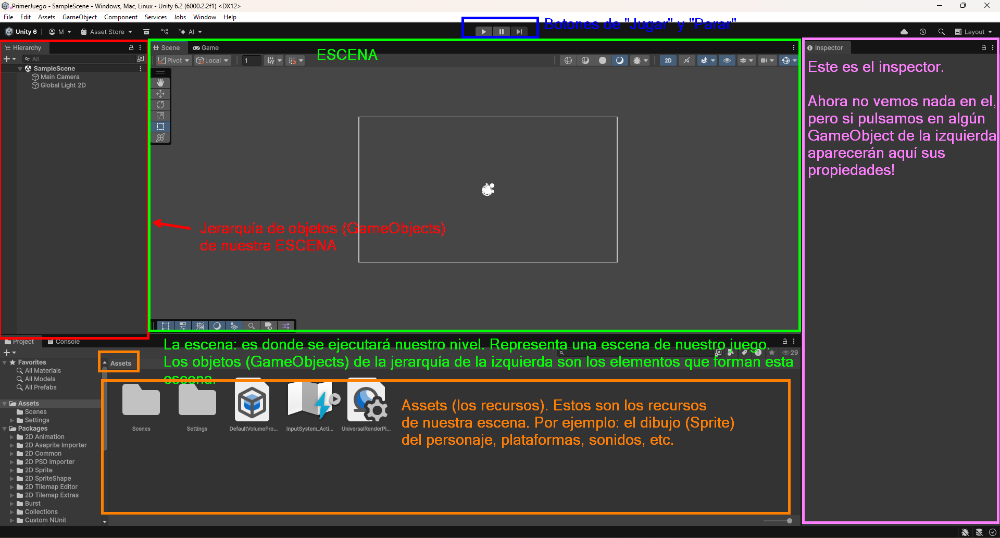

1. Creación de un juego básico
1.1 Descarga de Unity
Para desarrollar para Unity, puedes descargarte primero UnityHub (es una aplicación donde puedes gestionar diversas versiones de Unity). Unity, por su parte, es el propio motor de videojuegos (y lo puedes descargar desde Unity Hub).
En pocas palabras, el primer paso es descargarte UnityHub y después, desde dentro de Unity Hub podrás descargar la última versión estable de Unity (es posible que se te inicie la descarga automáticamente).

En la imagen anterior podemos ver las pestañas de proyectos e instalaciones (estamos en la de instalaciones). Arriba podemos pulsar en "Instalar Editor" para instalar versiones de Unity. Es posible que al entrar ahí ya se te ponga una versión a descargar automáticamente (sino, lo puedes hacer con el botón correspondiente).
1.2 Creación de proyecto en Unity
Para crear un proyecto 2D vamos a "Projects" - New Project (y elegimos Universal 2D):

Ejercicio
- Descarga UnityHub y la última versión estable de Unity.
- Elige una carpeta para tus proyectos (p. ej: juegos-unity). Después, elige esa carpeta y dentro de ella crea un proyecto de tipo Universal 2D que se llame PrimerJuego.
1.3 La interfaz de Unity
En la siguiente imagen podemos ver las partes de las que se compone la interfaz de Unity. 
- La parte principal es la central: La escena. Una escena representa una pantalla del juego (por ejemplo, la pantalla del menú, un nivel del juego con el jugador y los monstruos, etc.).
- Cada escena contiene objetos del juego (GameObjects). Estos son los que salen en el menú de la parte izquierda de la imagen (la jerarquía). Por ejemplo: monstruos, el personaje, una plataforma, etc.
- Si pulso en un GameObject (parte izquierda) podré ver sus propiedades en la parte derecha.
Resumiendo, la parte principal de Unity es la escena (que será el nivel que vamos a crear). En esta escena vamos a añadir objetos para mejorarla.
1.4 Los GameObjects y sus componentes
Para crear el GameObject más básico posible en la escena hacemos lo siguiente:

1.4.1 GameObjects: el componente transform
Si pulsas sobre el GameObject (recuerda, el que hemos creado es el más básico posible) podrás ver que solo tiene un componente llamado transform. Este componente representa la posición del objeto en la escena y su tamaño.
Info
Todos los GameObjects tienen, al menos, este componente transform.
1.4.2 GameObjects: imágenes con el componente Sprite Renderer
 Aunque tenemos un GameObject, no vemos nada todavía en la escena. Quiero hacer que este GameObject sea en el futuro el personaje de mi juego. Para ello, lo primero debería ser poder poner una imagen del mismo. Para ello usamos el componente Sprite Renderer.
Aunque tenemos un GameObject, no vemos nada todavía en la escena. Quiero hacer que este GameObject sea en el futuro el personaje de mi juego. Para ello, lo primero debería ser poder poner una imagen del mismo. Para ello usamos el componente Sprite Renderer.
Ten en cuenta que una imagen en desarrollo de juegos se denomina como Sprite**.
Si pulsas sobre el GameObject que has creado para que te aparezcan sus propiedades/componentes en el inspector (panel derecho). Una vez hecho esto, en la parte inferior del inspector (bajo el transform) verás un botón "Add Component".
Si en ese "Add Component" añadimos un componente de tipo "Sprite Renderer" podremos ahí añadir las propiedades de la imagen.
Info
Ya tenemos dos componentes:
- El transform posee la posición, rotación y tamaño del GameObject.
- El Sprite Renderer nos permite añadir una imagen al GameObject.
Ejercicio
- Cambia el nombre al Game Object para que se llame "Personaje" (será el personaje que luego moveremos).
- Descarga la imagen del conejo (este conejo es de un pack de recursos de kenney.nl).
- Copia o arrastra el conejo a los recursos (assets) de tu proyecto (panel inferior). Esto nos permitirá usarlo después.
- Añade un Sprite Renderer al personaje. Verás que el componente Sprite Renderer tiene la propiedad "Sprite". Arrastra el conejo desde los assets hasta el atributo Sprite y debería aparecer en la escena.
- Modifica su transform en el inspector (panel derecho) para moverlo a la parte inferior derecha de la pantalla. Para ello tendrás que modificar su posición en el eje X y en el eje Y.
- Modifica su escala: haz que sea 1.5 veces más grande.
- Ahora, resetea de nuevo su posición y escala a como estaban al principio. Posición (0,0,0) y escala 1.
También, en lugar de crear un GameObject vacío (el cuál recordemos que tendrá siempre, como mínimo, un transform) y luego añadirle el "Sprite Renderer" para poder añadirle un Sprite (imagen), Unity nos permite añadir directamente el GameObject con el SpriteRenderer. Veámoslo:
1.4.2.1 Creación directa de objetos Sprite en Unity
Para crear un objeto que directamente tenga ya un Sprite Renderer con una forma concreta (por ejemplo, un cuadrado) hacemos lo siguiente:

Esto nos añadirá un nuevo objeto ya con un cuadrado representado (o un círculo, triángulo, etc.).
1.4.3 Otros componentes
Además de transform y sprite renderer, existen muchos otros componentes (colliders, físicas, tilemaps, sonidos...). Estos los veremos más adelante.
1.5 Configuraciones del editor de Unity
1.5.1 Configurar editor de texto para programar
Podemos elegir Visual Studio 2022 o Visual Studio Code. Consulta la siguiente imagen:

1.5.2 Cambiar color al estar en modo "ejecución"
Si ejecutamos un juego y mientras estamos jugándolo cambiamos parámetros del mismo, estos no se cambian. Para identificar cuando estamos en modo "ejecución" es mejor cambiar el color de la interfaz de Unity:
Edit → Preferences → Colors → Playmode tint

Ejercicio
- Configura tu IDE para programar a VSCode o VStudio.
- Configura un color diferente al ejecutar tu juego tal y como se indica en el apartado anterior.
1.6 Scripting básico
Vamos a explicar esto usando el nuevo InputSystem de Unity (si consultais internet y veis otras formas de hacerlo, es posible que estén hechas con el antiguo InputSystem).
Vamos a empezar viendo, con el nuevo InputSystem de Unity, como mover el personaje de la forma más sencilla posible.
1.6.1 Creación de un script
Hay dos maneras de crear un script en Unity:
- Forma I: botón derecho en la zona de
assetsy luego: create -> scripting -> Monobehaviour Script. Después de esto, se le pone el nombre al script y se "arrastra" al GameObject al que se quiere enlazar (los scripts van asociados a un GameObject). - Forma II: en un GameObject cualquiera (p. ej: el personaje) añades un nuevo componente de tipo "script" y le das un nombre. De esta manera, ya queda tanto creado como asociado.
Ejercicio
En este ejercicio vamos a practicar la creación, enlazado, desenlazado y borrado de un script en Unity:
- Crea un nuevo script de la primera forma, luego enlázalo con el personaje.
- Elimínalo del personaje y luego borra el script.
- Crea un nuevo script de la segunda forma (directamente añadiendolo como componente al personaje).
- Elimina el script.
- Crea una carpeta Scripts en tus assets.
- Crea un script de nombre PersonajeController y luego enlázalo al personaje.
- Abre el script.
1.6.2 Métodos básicos en un script
Si has abierto el script tal como se indica en el ejercicio, verás que este hereda de una clase llamada "MonoBehaviour". Además, verás que estamos sobreescribiendo dos métodos: Start() y Update():
- Start(): este método se ejecuta en el momento en que el GameObject al que está asociado el script entra en la escena (en este caso, el GamneObject al que hemos asociado el script es el personaje). Esto es, en el momento en que ejecutamos el juego el método Start() se ejecutará.
- Update(): este método se ejecutará una vez por frame. Por ejemplo, si este juego se está ejecutando a 60 frames o imágenes por segundo, entonces el método Update() se ejecutará 60 veces cada segundo.
public class PersonajeController : MonoBehaviour
{
// Se llama justo antes de ejecutarse el primer frame
void Start()
{
}
// Update se llama una vez por frame
void Update()
{
}
}
Info
No vas a necesitar hacer apenas bucles en Unity, ya que el propio Update() ya se está ejecutando en bucle. Si quieres ejecutar algo de forma constante en el tiempo solo tienes que ponerlo ahí dentro.
1.6.2.1 Mostrando mensajes por pantalla
Para mostrar un mensaje en la consola de Unity podemos usar Debug.Log(mensaje).
Ejercicio
- Muestra un mensaje "Hola mundo" al ejecutar el juego. Comprueba que aparece en la consola de Unity.
- Muestra un mensaje "Me ejecuto una vez por frame." de manera que aparezca una vez por cada frame o imagen.
- Elimina los mensajes anteriores y crea un contador de frames, de manera que con cada frame vaya sumándose el contador y mostrando el número por pantalla.
1.7 InputSystem de Unity (básico)
Para mover el personaje puedes utilizar la clase Keyboard de Unity.InputSystem:
if (Keyboard.current.aKey.isPressed)
{
// Me muevo a la izquierda
} else if (...) {
// Me muevo a la derecha
}
La variable isPressed tiene un trueo un false dependiendo de si está pulsada la tecla "A" o no lo está. Hay una referencia en Keyboard.current a cada tecla posible del teclado, por lo que puedes comprobar si está presionada cualquiera de ellas.
Esto es interesante, ya que si estoy pulsando la tecla "a" o la flecha izquierda, puede que quiera moverme a la izquierda. Por su parte, si pulso "d" o la flecha derecha, me quiero mover a la derecha, etc.
Ejercicio
- ¿En qué método crees que deberías poner el código anterior para comprobar de forma continuada durante todo el juego si se está puslando una tecla?
- En ese método que has pensado, coloca el código necesario (basandote en lo que te he puesto yuo) para comprobar si nos estamos moviendo a la izquierda (a) o a la derecha (d). En ese caso pon mensajes de "Me muevo a la izquierda" y "Me muevo a la derecha". Comprueba que funcionan ejecutando el juego y pulsando esas teclas.
- Si has hecho ya lo anterior, haz también que funcione para la "flecha arriba" y "flecha abajo". Esto es más cuestión de saber programar (puedes usar un OR || para que te funcione el juego para ambas teclas).
Si has resuelto correctamente el ejercicio, podrás moverte a izquierda y derecha con las flechas y con A-D.
1.8 Movimiento
1.8.1 Cambiando la posición de un personaje
A estas alturas supongo que estais pensando... "todo esto está muy bien, pero cuando podré hacer el próximo League of Legends"?
Pues tranquilos amigos/as, vamos paso a paso. Ahora toca a mover el personaje al pulsar esas teclas (que ya es un gran avance en tan poco tiempo que llevamos de tutorial!):
Ejercicio
- ¿Recuerdas como mover el personaje desde Unity (no desde el script)? Lo hemos hecho hace un rato. Muévelo de nuevo poniéndolo más a la izquierda o más a la derecha desde el inspector de Unity, no con la interfaz gráfica.
- ¿Cómo se llama el componente del GameObject que has tocado para cambiar esa posición?
Bien, si has hecho el ejercicio anterior has debido responderte a la segunda pregunta. El componente que has tenido que tocar ha sido el transform (concretamente el position del transform). Pues esto mismo que modificamos en el ejercicio es lo que modificaremos en el script, pero: ¿cómo accedemos a su transform? Pues con transform.position:
Ejercicio
- Muestra un mensaje al iniciar el juego que indique la posición del jugador: "La posición del personaje al empezar el juego es: ..."
Si has hecho el ejercicio, verás que la posición se ve como una coordenada de tres dimensiones (posición en el eje horizontal, posición en el eje vertical, profundidad). Esto es, (x, y, z).
Existen dos tipos de datos principales para colocar objetos en la escena de Unity:
- Vector2: coordenadas x e y.
- Vector3: coordenadas x, y, z.
El valor que has podido ver en consola (de transform.position) es un Vector3. Esa posición del personaje puede ser modificada.
Para crear un Vector3 puedes usar lo siguiente
Ejercicio
- Intenta modificar la posición del personaje desde código al iniciarse el juego (para que esté arriba a la derecha por ejemplo). Para ello tienes que modificar el transform.position para que tenga otro valor (recuerda, un valor de tipo Vector3 y con la "z" a 0, ya que estamos en 2 dimensiones).
1.8.2 Moviendo el personaje
Hemos posicionado el personaje en el punto que queríamos. Si lo vamos situando en posiciones muy cercanas en cada frame, podemos simular movimiento en él.
Ejercicio: mover el personaje cambiando su posición lentamente
Ahora vamos a hacer que el personaje se mueva izquierda y derecha. Cuando pulses las teclas a-d, tu personaje debe moverse "un poco a la izquierda" o "un poco a la derecha".
- Para hacerlo, deberás sumarle o restarle a la X de tu posición actual un valor (puedes empezar probando con 1).
- Si 1 es mucho, puedes probar con decimales (estos se ponen con "f" al final, por ejemplo: 0.1f, 0.55f, etc.).
void Update()
{
// Compruebo si pulso "a" o "flecha izquierda" o en caso contrario "d" o "flecha derecha"
// En caso de pulsar izquierda resto la X, si voy a la derecha sumo en la X
if (Keyboard.current.aKey.isPressed || Keyboard.current.leftArrowKey.isPressed)
{
transform.position = new Vector3(
transform.position.x - 0.1f, // (1)!
transform.position.y,
transform.position.z
);
}
else if (Keyboard.current.dKey.isPressed || Keyboard.current.rightArrowKey.isPressed)
{
transform.position = new Vector3(
transform.position.x + 0.1f, // (2)!
transform.position.y,
transform.position.z
);
}
// Imprimo en consola la posición actual (para ver como va cambiando)
Debug.Log("Posición actual: " + transform.position);
}
transform.position.xes la X actual del GameObject al que está ligado el script (es decir, de mi jugador). Lo que hago aquí es sumarle o restarle 0.1f a la X actual para moverlo 0.1 a la derecha o a la izquierda (según si se pulsa la "a" o la "d").transform.position.xes la X actual del GameObject al que está ligado el script (es decir, de mi jugador). Lo que hago aquí es sumarle o restarle 0.1f a la X actual para moverlo 0.1 a la derecha o a la izquierda (según si se pulsa la "a" o la "d").
Info
Ten en cuenta que no estamos realmente aplicando una velocidad al personaje y moviéndolo, sino que lo estamos posicionando "casi en el mismo sitio, pero un poquito más a la izquierda o derecha en cada frame". De esta manera, generamos sensación de movimiento en el juego.
Ejercicio
- Intenta conseguir también que se mueva arriba y abajo. ¿Notas algo raro al moverlo en diagonal?